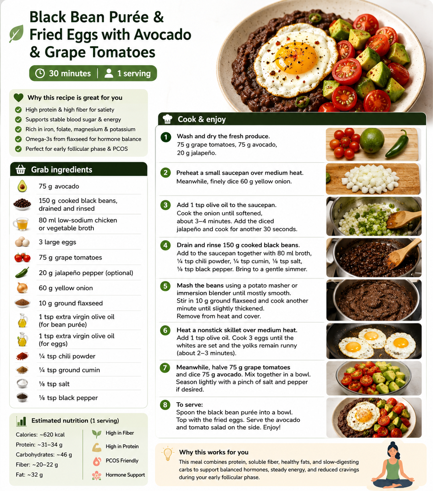

PCOS-friendlyEarly follicular phaseHigh proteinHigh soluble fiber

Estimated: protein 31-34 g, fiber 20-22 g. Optimized for satiety, stable blood sugar, soluble fiber, and early follicular phase support. Because apparently food can do more than simply rescue humans from their own scheduling decisions.